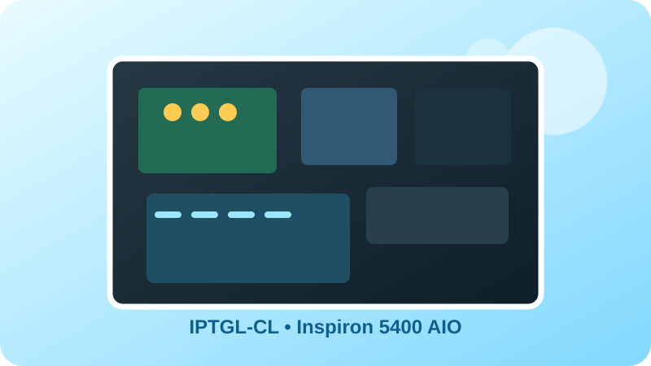
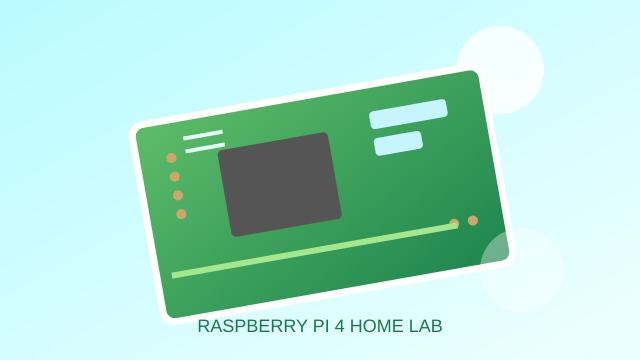
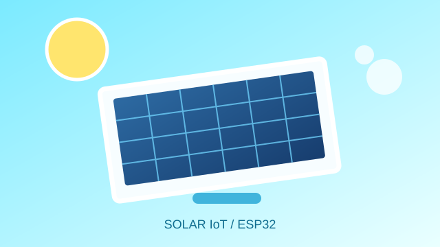

Clear sky.
Bright ideas.
A personal technology lab for hardware repair, Raspberry Pi, embedded systems, web experiments, and all the wonderfully weird stuff worth building.

Things I've built and broken.
Hardware, self-hosting, IoT, and web experiments — presented like a bright little digital notebook from the future that the 2000s promised us.
Dell AIO → Standalone PC
Turning a Dell Inspiron all-in-one motherboard into a compact standalone PC.
View project →
Raspberry Pi Home Lab
Pi-hole, networking, self-hosted services, and automation.
View project →
Solar IoT Model
ESP32 + solar panel + battery + relay control.
View project →A little bit Y2K. A lot more joy.
CrystalClearX Lab now leans into the glossy, optimistic “future is friendly” aesthetic: clear skies, soft glass, aqua gradients, bubbles, and UI that feels like it belongs on a translucent MP3 player.
Build · Repair · Explore · Create
Under all the nostalgia, the site is still intentionally lightweight: plain HTML, CSS, JavaScript, and Cloudflare Workers Static Assets.
Open the project log →Welcome to the Lab.
CrystalClearX Lab is a growing notebook for projects that start as “what happens if I try this?” and end with a board, a terminal, or a website that actually works.
The interface may be nostalgic, but the projects are real: hardware repair, Raspberry Pi services, IoT prototypes, Linux tinkering, and web experiments.